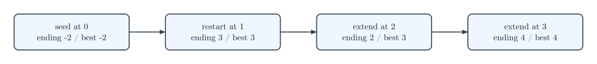
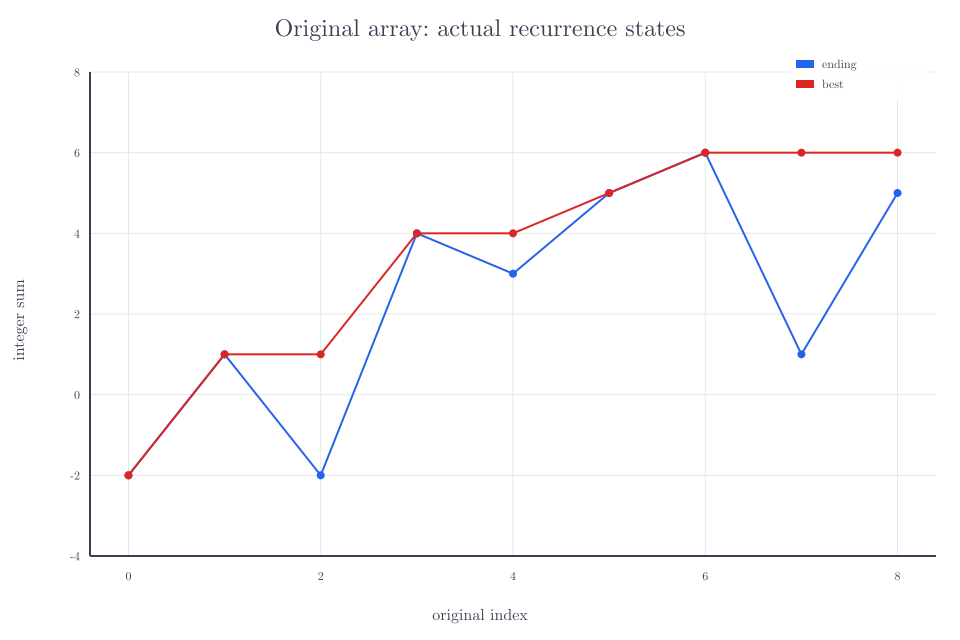
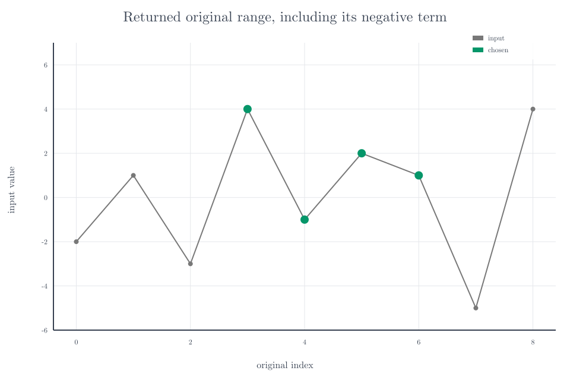
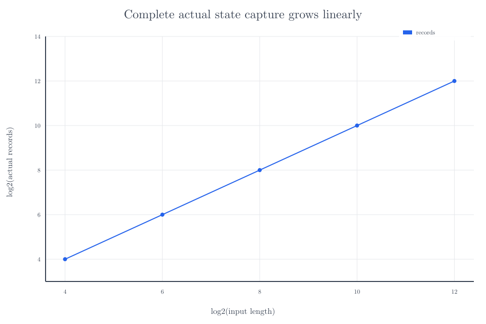

Kadane's recurrence: discard only a harmful prefix
Abstract
The maximum contiguous subarray can be found in one pass by tracking the best subarray ending at each position. We begin with an actual restart, retain the original nine-element example and inspect producing local/global states without replay. Negative-only, empty and equal-sum controls explain the contract. Integer decisions are checked in int64; the legacy double sum rounds only at the return boundary.
See a negative prefix restart
In [−2,3,−1,2], the first sum −2 hurts any extension, so the next element starts a fresh candidate. The following native records show that actual restart, subsequent extension and global best update. Diagram nodes summarize producing states, not a reimplementation on prefixes.
#include <dm/dm.hpp>
int main() {
std::filesystem::create_directories("build");
const auto t = dm::algorithms::kadane_trace({-2, 3, -1, 2});
const char *actions[] = {"seed", "restart", "extend"};
dm::graphics::Diagram d;
std::print("| index | input | action | running before | running after | best after |\n| ---: | ---: | " "--- | ---: | ---: | ---: |\n");
for (const auto &e : t.steps) {
std::print("| {} | {} | {} | {} | {} | {} |\n", e.index, e.value,
actions[int(e.action)], e.running_before, e.running_after,
e.best_after);
d.node(std::to_string(e.index), {5. * e.index, 0},
std::format("{} at {}\nending {} / best {}",
actions[int(e.action)], e.index, e.running_after,
e.best_after));
if (e.index)
d.edge(std::to_string(e.index - 1), std::to_string(e.index));
}
d.save_svg("build/kadane_restart.svg");
}| index | input | action | running before | running after | best after |
|---|---|---|---|---|---|
| 0 | -2 | seed | 0 | -2 | -2 |
| 1 | 3 | restart | -2 | 3 | 3 |
| 2 | -1 | extend | 3 | 2 | 3 |
| 3 | 2 | extend | 2 | 4 | 4 |

Derive the ending-at-current invariant
Every nonempty subarray ending at i either starts at i or extends one ending at i−1. Hence
A negative previous C makes restarting strictly better. A zero previous C ties, and this implementation extends to retain the earlier beginning. The global best changes only on a strict improvement. Seed with the first element, rather than zero, so all-negative input returns a nonempty least-negative element. Empty input separately returns sum zero and [0,0).
Retain the original nine elements
The original input is [−2,1,−3,4,−1,2,1,−5,4]. Its selected [3,7) contains [4,−1,2,1] and totals six. The following program prints every producing ending-here/global state and plots both actual sequences.
#include <dm/dm.hpp>
int main() {
std::filesystem::create_directories("build");
const std::vector<int> a = {-2, 1, -3, 4, -1, 2, 1, -5, 4};
const auto t = dm::algorithms::kadane_trace(a);
std::vector<double> x, current, best;
std::print("| index | input | running begin | running sum | best begin | best end | best sum | changed " "|\n| ---: | ---: | ---: | ---: | ---: | ---: | ---: | --- |\n");
for (const auto &e : t.steps) {
std::print("| {} | {} | {} | {} | {} | {} | {} | {} |\n", e.index,
e.value, e.running_begin, e.running_after, e.best_begin,
e.best_end, e.best_after, e.best_changed);
x.push_back(e.index);
current.push_back(e.running_after);
best.push_back(e.best_after);
}
if (t.result.sum != 6 || t.result.begin != 3 || t.result.end != 7)
throw std::runtime_error("original range");
std::print("\nActual best sum {} over [{},{}).\n", t.result.sum,
t.result.begin, t.result.end);
auto p = dm::graphics::RPlot::create();
p.line(x, current, "ending", {37, 99, 235}, 2).points(x, current, "",
{37, 99, 235}, 4).line(x, best, "best", {220, 38, 38}, 2).points(x, best, "", {220, 38, 38}, 4).title("Original array: actual recurrence states").x_label("original index").y_label("integer sum").y_limits(-4, 8).save_svg("build/kadane_original.svg");
}| index | input | running begin | running sum | best begin | best end | best sum | changed |
|---|---|---|---|---|---|---|---|
| 0 | -2 | 0 | -2 | 0 | 1 | -2 | true |
| 1 | 1 | 1 | 1 | 1 | 2 | 1 | true |
| 2 | -3 | 1 | -2 | 1 | 2 | 1 | false |
| 3 | 4 | 3 | 4 | 3 | 4 | 4 | true |
| 4 | -1 | 3 | 3 | 3 | 4 | 4 | false |
| 5 | 2 | 3 | 5 | 3 | 6 | 5 | true |
| 6 | 1 | 3 | 6 | 3 | 7 | 6 | true |
| 7 | -5 | 3 | 1 | 3 | 7 | 6 | false |
| 8 | 4 | 3 | 5 | 3 | 7 | 6 | false |
Actual best sum 6 over [3,7).

Nonempty, empty and strict ties
Strict global updates select the earliest ending optimum. Zero-prefix extension also preserves the earliest beginning compatible with that ending. For [1,−1,1], the later equal maximum does not replace the first [0,1). For [0,0,0], the first singleton remains selected. These conventions are part of the API, not properties shared by every maximum-subarray implementation.
#include <dm/dm.hpp>
int main() {
std::filesystem::create_directories("build");
std::print("| control | returned sum | begin | end |\n| --- | ---: | ---: | ---: |\n");
const auto show = [](const char *name, const std::vector<int> & a) {
const auto r = dm::algorithms::kadane(a);
std::print("| {} | {} | {} | {} |\n", name, r.sum, r.begin, r.end);
};
show("empty", {});
show("negative only", {-3, -1, -2});
show("zero tie", {0, 0, 0});
show("later equal maximum", {1, -1, 1});
show("int extremes",
{std::numeric_limits<int>::max(), std::numeric_limits<int>::max(),
std::numeric_limits<int>::min()});
bool capped = false;
try {
(void) dm::algorithms::kadane_trace({1, 2, 3}, 2);
} catch (const std::length_error &) {
capped = true;
}
if (!capped)
throw std::runtime_error("complete cap");
std::print("\nA one-short complete history quota rejects before recurrence execution.\n");
const std::vector<int> a = {-2, 1, -3, 4, -1, 2, 1, -5, 4};
const auto r = dm::algorithms::kadane(a);
std::vector<double> x, y, bx, by;
for (std::size_t i = 0; i < a.size(); ++i) {
x.push_back(i);
y.push_back(a[i]);
if (i >= r.begin && i < r.end) {
bx.push_back(i);
by.push_back(a[i]);
}
}
auto p = dm::graphics::RPlot::create();
p.line(x, y, "input", {120, 120, 120}, 2).points(x, y, "", {120, 120, 120},
4).points(bx, by, "chosen",
{5, 150, 105}, 7).title("Returned original range, including its negative term").x_label("original index").y_label("input value").y_limits(-6, 7).save_svg("build/kadane_controls.svg");
}| control | returned sum | begin | end |
|---|---|---|---|
| empty | 0 | 0 | 0 |
| negative only | -1 | 1 | 2 |
| zero tie | 0 | 0 | 1 |
| later equal maximum | 1 | 0 | 1 |
| int extremes | 4294967294 | 0 | 2 |
A one-short complete history quota rejects before recurrence execution.

Count complete producing states
One record per input element gives n records, including the initial seed and n−1 recurrence decisions. In the controlled alternating [−1,2] family, only the first negative prefix is restarted; subsequent positive running sums extend. This profile counts actual records and actual restart decisions, not elapsed time or distinct arithmetic operations.
#include <dm/dm.hpp>
int main() {
std::filesystem::create_directories("build");
std::vector<double> x, y;
std::print("| n | actual records | restart decisions | selected sum |\n| ---: | ---: | ---: | ---: |\n");
for (std::size_t n = 16; n <= 4096; n *= 4) {
std::vector<int> a(n);
for (std::size_t i = 0; i < n; ++i)
a[i] = i % 2 ? 2 : -1;
const auto t = dm::algorithms::kadane_trace(a);
std::size_t restarts = 0;
for (const auto &e : t.steps)
restarts += e.action == dm::algorithms::KadaneAction::Restart;
std::print("| {} | {} | {} | {} |\n", n, t.steps.size(), restarts,
t.result.sum);
x.push_back(std::log2(n));
y.push_back(std::log2(t.steps.size()));
}
auto p = dm::graphics::RPlot::create();
p.line(x, y, "records", {37, 99, 235}, 2).points(x, y, "", {37, 99, 235}, 4).title("Complete actual state capture grows linearly").x_label("log2(input length)").y_label("log2(actual records)").y_limits(3, 14).save_svg("build/kadane_work.svg");
}| n | actual records | restart decisions | selected sum |
|---|---|---|---|
| 16 | 16 | 1 | 9 |
| 64 | 64 | 1 | 33 |
| 256 | 256 | 1 | 129 |
| 1024 | 1024 | 1 | 513 |
| 4096 | 4096 | 1 | 2049 |

The kernel makes exact checked int64 decisions. The historical result retains a double sum, rounded once on return, so large integer totals need not be exactly representable in that field. A positive extension that exceeds int64 throws. This corrects potential range-selection ties caused by the former double recurrence, while ordinary small-integer tie behavior is preserved. Scalar search uses O(n) time and O(1) space with immutable borrowed input. Capturing history adds O(n) owned storage; complete default million-record admission precedes execution, zero disables the optional cap, and byte/capacity/RAM overhead is excluded. No external dataset is needed.
Independent complete subarray enumeration checked 1,000 arrays and 14,908 actual
recurrence records, including earliest-ending/earliest-beginning ties. Another
1,000 ordinary arrays matched the frozen original. Native exhaustive small-array
and large-total tests verify the corrected exact integer decisions, quota
admission and owned histories. The shared ten-report build passed 131 native
tests, 38 directly instrumented address/undefined-behaviour sanitizer tests, 89
compiled public examples, documentation coverage for all 388 scoped definitions
and ten representative clangd hovers. All four complete C++ report programs
executed successfully and their native figures were visually reviewed. Batch
receipts are retained under build/mepml-conversion/batch-174-183/.
Reference
Jon Bentley (1984), Programming Pearls: Algorithm Design Techniques, Communications of the ACM27(9),865–873. Its displayed zero-allowing recurrence differs from this API's nonempty/all-negative convention, which is derived above.